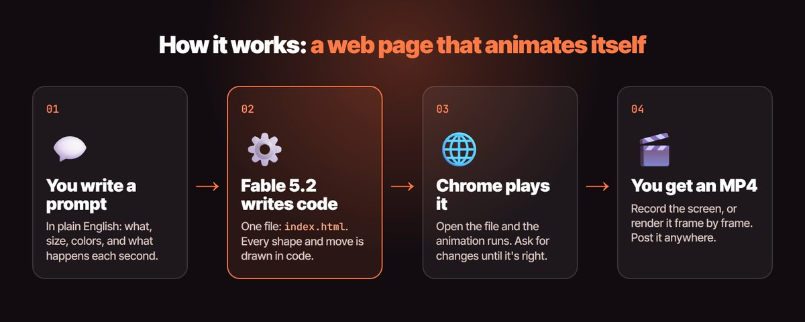

Motion Design with Fable 5.2: from zero to your first video in 10 minutes

- Author: anstap (@anstapnever)
- Published: Sat 14 Nov 2026, 23:42 UTC (X Article)
- Source: https://x.com/anstapnever/status/2121750611691712817
- Cover image: media/article-cover.jpg
- Stats at capture (18 Nov 2026): 174,403 views · 67 likes · 10 reposts · 161 bookmarks
- Captured via: Apify (
xquik/x-article-scraper), full text and every media block, unedited
Note: every video and image in this entry is stored in this repo under
media/, so it keeps working even if the original post is deleted.
You don't need After Effects for this. You don't need to know code either, or to have ever animated anything.
You need Claude, a browser and this guide.
That intro took Fable 5.2 two messages and under 6 minutes. Both were typed in plain English, and every shape, letter and bounce in it is drawn by code Fable wrote. There's no stock footage, no template and no plugin behind it.
This guide takes you from nothing installed to an MP4 you can post, step by step. Every prompt here was run on Fable 5.2, and you'll see what came back from each one, including the one that came out generic.
What's inside:
- How it works, in one minute
- What you need and what it costs
- Path 1: no install, in the Claude app
- Path 2: Claude Code, on Windows or Mac
- Your first video: one line, and what it gives you
- The director's template: the 6 lines that make it yours
- How to ask for changes: 12 phrases that work
- Vertical video for Reels, TikTok and Shorts
- Turn it into an MP4
- Add music
- 4 more prompts you can copy
- 10 beginner mistakes and their fixes
How it works, in one minute
Fable 5.2 doesn't make a video file. It writes a small web page that animates itself.
You open that page in Chrome and the animation plays: shapes move, letters drop in, the camera pushes in. Because it's code, every move happens at the exact second you asked for, and you can change any of it by asking.
Then you turn the page into an MP4, either by recording the screen or with a small script that saves it frame by frame. That MP4 is what you post.

That's the whole pipeline. Everything else in this guide is about writing prompts that give you good motion on the first try, and fixing what's off in the second.
Why Fable 5.2 for this? Anthropic lists 3D and motion design among the things it's built for, and it follows detailed direction closely. Tell it "the title lands at 3.0 s with a small bounce" and it lands at 3.0 s with a small bounce.
[Embedded post] https://x.com/i/status/2119867114450268322
What you need and what it costs
- A paid Claude plan with access to Fable 5.2. Check the model menu in the Claude app: if you see Fable 5.2, you're set.
- A computer with Google Chrome.
- 10 minutes for the first video.
Fable 5.2 is Anthropic's most expensive model. On the API it costs $8 per million input tokens and $40 per million output tokens, twice the price of Opus 5.5. On a subscription you don't pay per token, but Fable uses up your limits faster than other models.
Real numbers from the videos in this guide, counted from the session logs at API prices:
| Video | Time to make | API price |
|---|---|---|
| YouTube intro, one line | 6m 56s | $3.65 |
| YouTube intro, director's template | 2m 22s | $2.81 |
| The same intro, one follow-up | 3m 21s | $2.39 |
| Vertical post for Reels | 5m 16s | $3.03 |
| 30 s kids cartoon in 3D | 11m 11s | $9.34 |
| 24 s 3D scene, capybara in a hot spring | 26m 47s | $11.32 |
Short 2D motion like an intro or animated text is cheap. Big 3D scenes cost more. Either way it's a fraction of what a freelance motion designer charges for the same 10 seconds.
Path 1: no install, in the Claude app
This is the fastest way to see your first animation. Nothing to install.
- Open claude.ai or the Claude desktop app.
- Pick Fable 5.2 in the model menu.
- Paste a prompt from this guide. Every prompt here asks for "one HTML file I can open in Chrome".
- Claude writes the file and shows it in the preview panel next to the chat. Press play if it doesn't start on its own.
- Ask for changes in plain words: "make the title bigger", "slow down the ending".
- Download the file, open it in Chrome, and record the screen: Win+Shift+R on Windows (Snipping Tool, video mode), Cmd+Shift+5 on a Mac.
A screen recording is fine for your first post. It isn't frame-perfect, though: if your computer is busy it can skip frames, and the motion stutters. For a sharp 60 fps file, use Path 2.
Path 2: Claude Code, on Windows or Mac
Claude Code is Claude working in a folder on your computer. It writes the file, opens it, checks it and turns it into an MP4 itself. You type what you want, it does the rest.
You need a paid plan (Pro, Max, Team or Enterprise). Here's the setup, once.
On Windows, open PowerShell (press Start, type "PowerShell", press Enter) and paste:
irm https://claude.ai/install.ps1 | iex
winget install Gyan.FFmpeg
On a Mac, open Terminal and paste:
brew install --cask claude-code
brew install ffmpeg
The first line installs Claude Code. The second installs ffmpeg, the free tool that turns frames into an MP4. (No Homebrew on your Mac? Get it at brew.sh first.)
Close the window, open a new one, and start Claude Code in a fresh folder:
mkdir my-first-video
cd my-first-video
claude
It asks you to sign in with your Claude account the first time. Then pick the model and the effort:
/model fable
/effort high
Effort is how hard Fable thinks before it answers. Use high for a new video and medium for small fixes. Max costs a lot more and isn't better for this kind of work: it can think for minutes and still give you the same file.
You're ready. Everything below works the same in both paths.
Your first video: one line, and what it gives you
Start the way almost everyone starts: one line, the way you'd ask a friend.
Make me a 10-second animated intro for my YouTube channel called "Deep Cuts". Make it look professional. One HTML file I can open in Chrome.
This is what Fable 5.2 made from it, with no follow-ups:
It looks like a movie trailer. A dive through a tunnel of red frames, a depth counter, a glowing blade slashing across the screen, and "DEEP CUTS" slamming together from two halves. Technically, it's impressive.
But it's the wrong video. Deep Cuts is a channel about rare vinyl records. Fable didn't know that, so it guessed from the name: "deep" became the ocean (the counter runs down to 10,994 m, the deepest point on Earth) and "cuts" became a blade. It even wrote a tagline, "Go beyond the surface", for a channel that doesn't exist. Every choice in this video was Fable's, not yours.
That's the lesson of the first try. Fable can only make decisions you didn't make yourself, so with one line it guesses what your channel is about and picks a look that fits its guess. It isn't a bad intro. It's just not yours.
The fix isn't a better model or a magic word. It's six lines of direction.
The director's template: the 6 lines that make it yours
A motion designer never gets "make it look professional" as a brief. They get what it's for, the size, the colors, and what happens at each second. Give Fable the same and it stops guessing.
Here's the template. Copy it, fill in the brackets, and keep the order:
Make a [length]-second animated video as one HTML file I can open in Chrome. Everything is drawn in code: no images, no video files. Do it in one go without asking me questions.
WHAT: [what it is and who it's for, one sentence]
SIZE: [1920x1080 for YouTube and X, 1080x1920 for Reels and TikTok], 60 fps. [It plays once and holds the last frame / It loops with no seam.]
LOOK: background [color + hex code], text [color + hex], one accent [color + hex]. Font: [style, e.g. a bold rounded sans-serif from Google Fonts].
TIMELINE:
[0.0-1.0 s]: [what happens]
[1.0-3.0 s]: [what happens]
[...]: [one line per moment, until the end]
MOTION: nothing moves in a straight line at constant speed. Entrances ease out, exits ease in. Every bounce settles within 0.4 s.
Six blocks, and each one closes a door Fable would otherwise open on its own:
- WHAT tells it the purpose, so it knows what matters most.
- SIZE fixes the frame, so nothing gets cropped when you post.
- LOOK gives exact colors. Hex codes are the 6-character color codes like #E8613C. Google "color picker", pick a color, copy the code.
- TIMELINE is the most important block. One line per moment, with seconds. This is where the video becomes yours.
- MOTION is the same for every video. Copy it as is: it's the difference between "moves" and "feels designed".
Here's the same "Deep Cuts" intro, written with the template:
Make a 10-second animated intro video as one HTML file I can open in Chrome. Everything is drawn in code: no images, no video files. Do it in one go without asking me questions.
WHAT: an intro for my YouTube channel "Deep Cuts", where I dig up rare vinyl records nobody plays anymore.
SIZE: 1920x1080, 60 fps. It plays once, holds the last frame, and replays when I press R.
LOOK: a 70s record store. Warm cream background #EFE4CF with a subtle paper grain, deep brown ink #2B1B12, two accents: burnt orange #D9541E and mustard #E3A82B. Font: a fat retro serif from Google Fonts (like Shrikhand). Flat shapes with soft shadows, small halftone dots in the corners.
TIMELINE:
0.0-1.5 s: a square record sleeve slides in from the left with a small overshoot. Its cover is bold orange and mustard stripes.
1.5-3.0 s: a black vinyl record slides out of the sleeve to the right, then the sleeve slides away. The record has fine grooves and an orange center label.
3.0-4.5 s: the record starts spinning. A tonearm swings in from the top right and drops onto the record with a tiny bounce.
4.5-7.0 s: the title "Deep Cuts" appears letter by letter next to the record, 150 px, brown with a mustard offset shadow. Each letter pops in with a small bounce, 0.08 s apart.
7.0-8.5 s: the line "rare records, one dig at a time" slides up under the title, 42 px.
8.5-10.0 s: everything holds. The record keeps spinning and three small music notes float up from it and fade out.
MOTION: nothing moves in a straight line at constant speed. Entrances ease out, exits ease in. Every bounce settles within 0.4 s.
SOUND: none.
And the result, again first try, no follow-ups:
Every line of the timeline is on screen at the second it was asked for. The sleeve slides in, the record slides out and starts spinning, the tonearm drops, the title pops in letter by letter, the tagline slides up, the notes float away. Your colors, your words, your channel.
Fable added two things on its own, and both fit: "DEEP CUTS / SIDE A / 33 1/3" printed on the record label, and a short two-color line under the tagline.
It isn't perfect, though. In the first 3 seconds the sleeve sits in the top left corner and looks tiny, and the tonearm looks like a stick lying on the record. That's what the next section is for.
Side by side, the difference is the whole point of this guide:
You don't need to know animation words to write a timeline. "A record slides out of the sleeve" is enough. What matters is that every moment has a time, and that you said what you wanted instead of "make it professional".
A trick for the timeline if you're stuck: describe the video out loud as if you're telling a friend what you saw, second by second. Then write that down.
How to ask for changes: 12 phrases that work
Your first render will be close, not perfect. That's normal for designers too. The fix is a follow-up message, and the best follow-ups name a time and a number.
"Make it better" gives Fable nothing to work with. "From 0 to 3 s everything sits in the top left corner, center it" is a fix Fable can make in one go.
Here's a real one. After the template intro above, I sent Fable one message:
Two changes. 1) From 0 to 3 s the sleeve and the record sit in the top left corner and look tiny: center them in the frame, and make the record 30% bigger for the whole video. 2) The tonearm looks like a stick lying on the record: make it a real tonearm with a round base at the top right of the record, and the arm swings from the base onto the record at 3.0 s.
Fable rewrote the file in 3m 21s, for $2.39 at API prices. The sleeve and the record now sit in the center, the record is bigger, and a real tonearm with a base and a counterweight swings onto the grooves. It also added one move I didn't ask for and told me why: the record glides left at 2.4 s so the bigger record still fits next to the title. Two problems, two numbers, one message.
Phrases that work, and when to use them:
| What's wrong | What to type |
|---|---|
| It moves too fast | "Slow down everything between 3 and 6 s by 30%." |
| It feels stiff | "Add a small overshoot to every landing, it should settle within 0.4 s." |
| It feels like a slideshow | "Nothing appears with a plain fade. Every element enters with a move." |
| The text is hard to read | "Make the title 30% bigger and hold it at least 1.5 s before anything else moves." |
| The ending is empty | "From 8 s, keep something moving: the notes float 6 px up and down." |
| Things overlap | "The tagline overlaps the record at 7 s. Move the tagline 40 px right." |
| A color looks off | "Use exactly #D9541E for the accent. No other orange anywhere." |
| It looks cheap | "Add soft shadows under every shape, and a very subtle grain on the background." |
| The start is boring | "Frame 1 must already be moving. No empty first second." |
| The loop jumps | "The last frame must flow into the first. No jump at the seam." |
| Something is cut off | "Every word is fully inside the frame, with at least 80 px margin." |
| You want a new version | "Keep this file. Make a copy called v2.html and try the title in mustard there." |
Change one or two things per message, not ten. Fable will do ten, but it's harder for you to see which change made it better.
Vertical video for Reels, TikTok and Shorts
The same method works for vertical video. Change the size to 1080x1920 and design for a phone: big text, one idea per screen, and something moving from the first frame.
This one was made for Reels:
Make a 12-second vertical video for Reels and TikTok as one HTML file I can open in Chrome. Everything is drawn in code: no images, no video files. Do it in one go without asking me questions.
WHAT: a "record of the week" post for my vinyl channel "Deep Cuts".
SIZE: 1080x1920 (vertical), 60 fps, a seamless loop: the last frame flows into the first.
LOOK: dark brown background #1E140E with a slow moving warm glow, cream text #F3E7D3, one accent burnt orange #E0592A. Fonts from Google Fonts: a heavy condensed sans-serif for the big words, a retro serif for the small ones.
TIMELINE (120 BPM, one beat = 0.5 s):
0.0-0.5 s: a vinyl record is already spinning in the top half on frame 1, no empty start.
0.5-4.0 s: the words "RECORD OF THE WEEK" land one per beat under the record, stacked, each with a small squash.
4.0-7.0 s: a card slides up with the record's details, one line per beat: "Side B, Track 3", "Pressed in 1974", "Only 500 copies". The number "500" is orange and 1.5x bigger.
7.0-9.0 s: the record speeds up for one beat and a stamp "FOUND IT" slams onto the card with a 3-frame shake.
9.0-11.0 s: everything holds and pulses gently on every beat.
11.0-12.0 s: the text slides down and out, and the record returns to the exact position of frame 1, so the loop has no seam.
MOTION: nothing moves in a straight line at constant speed. Entrances ease out, exits ease in.
SOUND: none.
The record is spinning on frame 1, the words land on the beat, and the stamp hits like a real rubber stamp. The record makes exactly 7 full turns in 12 seconds, so the last frame flows straight into the first and the loop has no seam.
One detail I liked: Fable broke one of my MOTION rules on purpose and told me why. The stamp speeds up as it falls instead of slowing down, because a slam has to hit hard. A good designer breaks a rule when they know why.
Two lines in that prompt do the heavy lifting. "120 BPM, one beat = 0.5 s" puts every word on a beat, so any 120 BPM track you add later lines up with it. And "the last frame flows into the first" makes a loop: people watch it twice without noticing, and the platform counts both views.
Sizes for every platform:
| Where you post | Size | Shape |
|---|---|---|
| YouTube, X (wide) | 1920x1080 | 16:9 |
| X, Instagram feed (tall) | 1080x1350 | 4:5 |
| Reels, TikTok, Shorts, Stories | 1080x1920 | 9:16 |
| Square | 1080x1080 | 1:1 |
On X, 4:5 takes the most space in the feed on a phone. If you post the same video everywhere, make it 9:16 and keep the text inside the middle 1080x1350, so the 4:5 crop still works.
Turn it into an MP4
You have an HTML file. Here are three ways to get a video out of it, from easiest to best.
The easiest: ask Claude Code. In the same session, type:
Turn index.html into a 60 fps MP4, frame by frame, so no frames are dropped. 10 seconds.
It writes a small script, runs it and gives you index.mp4. This is what I'd do on day one.
The quick one: record your screen. Open the file in Chrome, press F11 for full screen, and use Win+Shift+R on Windows or Cmd+Shift+5 on a Mac. Fine for a draft, but it can stutter.
The best one: my render script. Same result every time, perfectly smooth, and it works on any page from this guide without changes. It uses a trick: it gives the page a fake clock that moves exactly 1/60 of a second per frame, so even a slow laptop never drops a frame.
You need Python once. Windows: winget install Python.Python.3.12. Mac: brew install python. Then:
pip install playwright
Save this as render.py in the same folder as your index.html (also saved separately in this folder as render.py):
# render.py: turns an animated HTML page into a smooth MP4, frame by frame.
# Setup once: pip install playwright (plus Google Chrome and ffmpeg, see the article)
# Use: python render.py index.html 10 (file, seconds)
# python render.py index.html 12 1080 1920 (vertical)
import sys, subprocess, pathlib
from playwright.sync_api import sync_playwright
page_file = pathlib.Path(sys.argv[1]).resolve()
SECONDS = float(sys.argv[2]) if len(sys.argv) > 2 else 10
W = int(sys.argv[3]) if len(sys.argv) > 3 else 1920
H = int(sys.argv[4]) if len(sys.argv) > 4 else 1080
FPS = 60
out = page_file.with_suffix(".mp4")
# A fake clock: the page thinks time passes exactly 1/60 s per frame,
# so no frame is ever dropped, however slow your computer is.
CLOCK = """
(() => {
let now = 0; const start = Date.now(); const RealDate = Date;
performance.now = () => now;
Date.now = () => start + now;
window.Date = class extends RealDate {
constructor(...a) { a.length ? super(...a) : super(start + now); }
static now() { return start + now; }
};
let queue = [];
window.requestAnimationFrame = cb => { queue.push(cb); return queue.length; };
window.cancelAnimationFrame = () => {};
window.__tick = ms => { now += ms; const q = queue; queue = []; q.forEach(cb => cb(now)); };
})();
"""
ffmpeg = subprocess.Popen([
"ffmpeg", "-y", "-loglevel", "error",
"-f", "image2pipe", "-framerate", str(FPS), "-i", "-",
"-c:v", "libx264", "-crf", "16", "-preset", "slow", "-pix_fmt", "yuv420p",
"-movflags", "+faststart", str(out)], stdin=subprocess.PIPE)
with sync_playwright() as p:
browser = p.chromium.launch(channel="chrome", args=["--enable-gpu", "--ignore-gpu-blocklist"]) # uses your own Google Chrome
page = browser.new_page(viewport={"width": W, "height": H})
page.add_init_script(CLOCK)
page.goto(page_file.as_uri())
page.wait_for_load_state("networkidle")
page.evaluate("document.fonts.ready")
page.evaluate("window.__tick(0)")
frames = int(SECONDS * FPS)
for i in range(frames):
page.evaluate(f"window.__tick({1000 / FPS})")
ffmpeg.stdin.write(page.screenshot(type="jpeg", quality=95))
if i % FPS == 0:
print(f"{i // FPS + 1} / {int(SECONDS)} s")
browser.close()
ffmpeg.stdin.close(); ffmpeg.wait()
print("done:", out)
Run it with the file name and the length in seconds:
python render.py index.html 10
For vertical video, add the size:
python render.py index.html 12 1080 1920
It prints the seconds as it goes and saves index.mp4 next to your file. A 10-second video takes about a minute.
Add music
A video with sound gets watched longer. Three ways to add it:
- Free music. Pixabay Music has thousands of tracks you can use for free, no sign-up needed to listen. Search by mood ("upbeat", "lofi") and pick one around 120 BPM if your timeline uses beats.
- Your own track. Anything you have the rights to.
- Let Fable make it. Ask: "Write a Python script that synthesizes a 10-second upbeat track at 120 BPM in C major and saves music.wav." It's simple, but it's 100% yours.
Then put the music under the video. Ask Claude Code ("add music.mp3 to index.mp4, fade out the last second"), or run this yourself:
ffmpeg -i index.mp4 -i music.mp3 -map 0:v -map 1:a -c:v copy -c:a aac -b:a 192k -af "afade=t=out:st=9:d=1" -shortest final.mp4
One tip that matters more than which track you pick: keep the music quieter than you think. Most people watch with sound low or off, and loud music sounds cheap. If you're unsure, turn it down by a third.
4 more prompts you can copy
Every one of these was run on Fable 5.2 and is printed here in full. Swap the nouns, keep the numbers.
1. A kids cartoon that teaches something
A fox and a bunny share a pizza and a 6-year-old learns what "one half" means. 30 seconds, 3D, 7 shots. Change four lines and it teaches counting, shapes or telling time instead.
[Embedded post] https://x.com/i/status/2121216551890419748
Fable 5.2: 11m 11s, $9.34.
2. A 3D scene with camera moves
A capybara in a snowy Japanese hot spring, 24 seconds, five camera angles. The trick is that the prompt gives the camera positions in meters and every action on the second, so the result looks directed instead of random.
[Embedded post] https://x.com/i/status/2120500496850997258
Fable 5.2: 26m 47s, $11.32.
3. A YouTube intro
The "Deep Cuts" template from this guide. Change WHAT, LOOK and the words in TIMELINE, and it's your channel's intro.
4. A "record of the week" post for Reels
The vertical post from this guide. Change the three detail lines and the stamp, and it's a weekly series: book of the week, sneaker of the week, recipe of the week.
10 beginner mistakes and their fixes
| Mistake | Fix |
|---|---|
| "Make it look professional" | Write a TIMELINE with seconds. Adjectives give you an average video. |
| No colors in the prompt | Give 3 hex codes: background, text, one accent. |
| Too many ideas in 10 seconds | One idea per video. If you need to explain two things, make two videos. |
| Text appears and disappears too fast | Hold every line at least 1.5 s. People need time to read on a phone. |
| An empty first second | Something is already moving on frame 1. The first 3 seconds decide whether people keep watching. |
| Asking for 10 changes at once | 1 or 2 per message, with a time and a number. |
| Recording the screen for the final | Use render.py or ask Claude Code for a frame-by-frame MP4. |
| Using Max effort | High for new videos, medium for fixes. Max costs more and isn't better here. |
| Wrong size for the platform | Pick the size before you start, from the table above. |
| Music too loud | Turn it down by a third. Quiet music sounds expensive. |
The short version
- Open Claude, pick Fable 5.2, effort high.
- Use the template: WHAT, SIZE, LOOK, TIMELINE, MOTION.
- Fix with follow-ups that name a time and a number.
- Render with Claude Code or render.py.
- Add quiet music and post.
Your first video will take 10 minutes. Your fifth will look like you hired someone.
If this saved you a subscription to After Effects, bookmark it so the template is here when you need it, and follow @anstapnever for the next prompt pack.